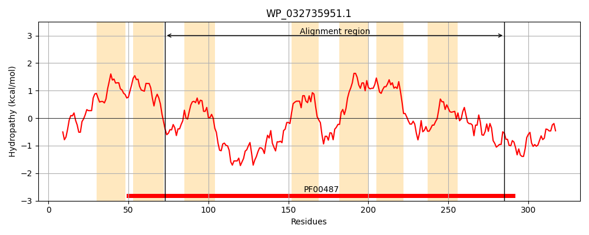
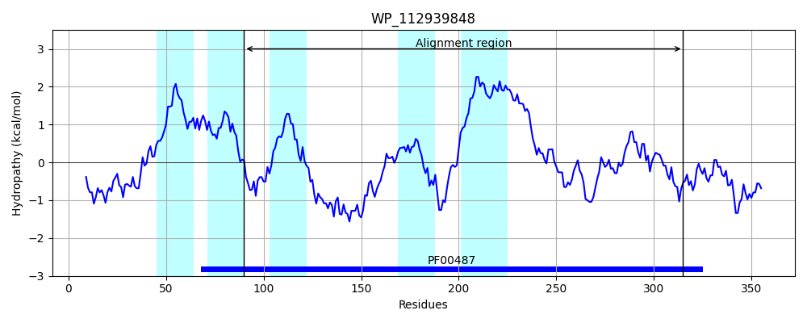
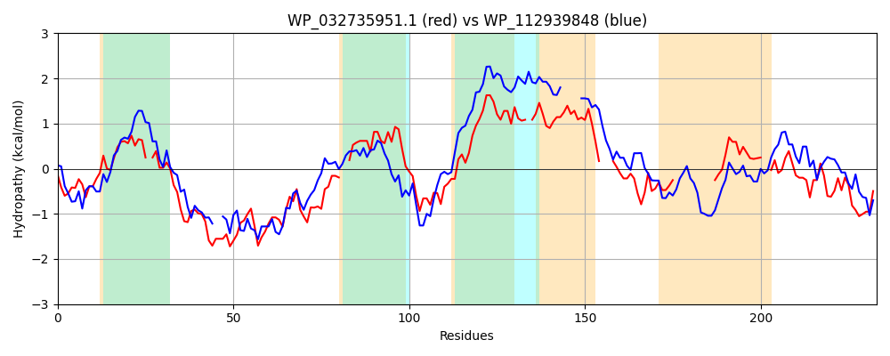

Hit Accession: WP_112939848
Hit TCID: 9.A.76.1.9
Hit Description: gnl|BL_ORD_ID|21765 gnl|TC-DB|WP_112939848.1|9.A.76.1.9 fatty acid desaturase [[Empedobacter] haloabium]
Mach Len: 233
e:0.000045
Query TMS Count : 7
Hit TMS Count: 5
TMS-Overlap Score: 4.750000
Predicted Substrates:CHEBI:24024;fatty acid
BLAST Alignment:
Score: 103 , Bit scores: 44 bits, E-value: 4.5e-05, Alignment length: 233, Percentage identity: 24
Query: 73 LQHELIHGHPTRLAWFNQLLGTLPLA-VWYPYGIYRDSHLAHHRNHLLTHPEDDPESYYVTAESWQRFSAWQRRLIHLRNT--FWGRLLLAPLMDIIHTLNRALRAFREGDRRAIAMWSLHLLLLTGLLTWMAA-QGFSPLWFVLAVSYPALALT---KVRSFLEHRAADDPLARS-----------VINEAGLPWRVLFL--NLNYHAVHHDLPGVPWYALRQLYLHRQTAY 285
+ H+ H +R N ++G L L + YP+ ++ H HH + E D + + E ++R S QR + T FW + ++ + R RR+IA L ++ G L + GF L+F+ P +A+ + + + H +AD P S V + P +LFL N+ H HH P VP+Y L++ + AY
Sbjct: 90 IAHDCGHNSFSRNKTLNIVIGHLSLLPLLYPFYSWKHVHNLHHFH--TNSLEMDTDWRPIPREMYKRMSLGQRFVYMGTRTWLFWAGTINYWIVSGFRPGFFPKKDMRSDVRRSIAFVVLASIVYFGALIYFTGLMGFFLLFFL-----PWIAIHTWFSMTTLMHHTSADIPFLTSEHWSTNASRMLVTTDYRYPQWLLFLTHNITIHTAHHVAPVVPFYNLQKAQAALKEAY 315 | Protein Hydropathy Plots: |
|---|
|  |  |
Pairwise Alignment-Hydropathy Plot:
|
|---|
|  |